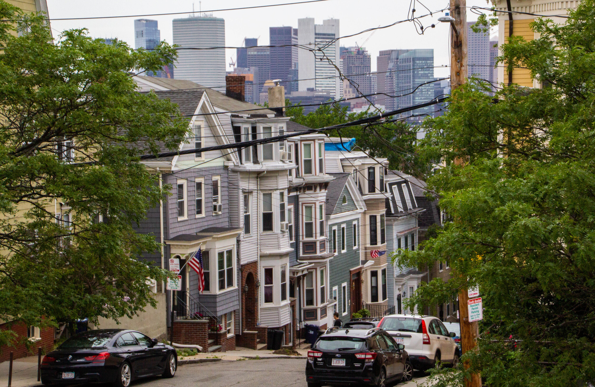

Or, 'The Inherent Instability of an Epileptic Field Engineer's Job History'
Early Life

Like all great stories, this one begins in South Boston, Massachusetts.
I grew up in South Boston, where I would live until moving to Philadelphia this past October. I passed the time by working as a janitor at MIT, which gave me the opportunity to solve equations left on chalkboards within the hallways. My best friend was Ben Affleck. I attended high school in the college-rich area of Boston, a marshy area by Fenway Park known as 'the fens'. I was surrounded by colleges of varying sizes, prestige, and focuses. Given that I did not precisely enjoy my high school, and also given how much the surrounding colleges had influenced it, I thought that going for a less traditional route for my secondary education would be more enjoyable.
College, a surprisingly good decision
I was wrong.
Massachusetts Maritime Academy is a regimented college in Cape Cod which specializes in... you guessed it... nautical & sea based sciences. I studied marine engineering, which is just like a cross between mechanical and electrical engineering except that it has the added bonuses of:
Multiple uncredited classes each semester
Regular watch standing duties. Watches lasted for four hours, and ran 24/7. Being slow to take to the disciplined environment, I regularly stood watch from 00:00-04:00 or 04:00-08:00
Weekend watches, which meant standing watch every 12 hours over the course of 2 weekends per semester
Holiday watches, which meant standing an 8 hour watch when the campus was closed for a holiday
A stricter disciplinary code than the already regimented academy
Although highly unenjoyable, learning how to make an 800 foot ship not only move from A-B but also function as a livable space, was one hell of an education. I traveled to places that I wasn't even aware existed, I saw things that most people only read about in the news, and made some lifelong friends with interesting & varied outlooks on life. One would even introduce me to my 'roommate' (and current partner of 5 years) during our freshman year
The Most Enjoyable Job I've Ever Had
It was difficult to frown at that job
I would experience my first seizure at the end of my freshman year (and the subsequent dozens over the remaining years as things worsened). My health would eventually deteriorate to the point that I would drop out of school during my final semester. As it turns out, all but the worst category of seizures aren't as obvious as you would think. It would take roughly a year after dropping out for me to even be sent to a neurologist's office.
After dropping out, I worked on a ferry based in Boston Harbor. This might be the most enjoyable job that I ever had. I would drive down to the south shore of Massachusetts and start up the engines at 5 am. From there, I would drive about 100-150 commuters into Boston.
The return trips were the greatest. We rarely had a single passenger, and I would drive into an early sunrise over the water with a hot cup of coffee and a smile - occasionally waving to the harbor seals as they came to investigate. I would make three trips in the morning, perform engine & ship maintenance tasks during the day, and five trips in the evening. I worked 3-4 days a week. Eventually, I would be diagnosed with epilepsy, and this would have to come to an end per USCG regulations
"The thing about epilepsy, the main overarching symptom that my patients bring up, is a certain level of inherent instability" - My first neurologist, circa 2016
"It says here that for 22 years, you...'went Kerouac on everybody's ass'?"
I spent about four months on the couch before feeling that my life was stable enough to find new work (and/or health insurance). From there, I would become a facilities engineer at a large office complex in Burlington, MA that housed offices for companies like Microsoft, NVidia, Salesforce, and ADP. I would do this for about a year, and really did enjoy it to a point. I fixed/operated anything mechanical within those spaces. Largely this meant adjusting the settings on the HVAC system whenever somebody got too cold or too warm, but it also meant figuring out why the waterfall feature was using so much water (A leak. A big, big leak which was chipping away at the building's foundation) and ensuring that the datacenters were guaranteed to be operating in an ideal environment (stable electrical system, and cool but not cold air with more humidity than the rest of the building).
I got lots of reading done on most days, if that gives you any idea of the general rhythm.
Eventually, I would have a poor reaction to a new medication, which meant that my health was once again too unstable to safely perform the job. I lived off of long term disability and FMLA benefits for about 7 months. From there, I figured real estate was the world for me. Once again, I was wrong. Real estate is a dirty, awful game for dirty, awful people who I happened to like very much. They were funny, charming, and everything that makes a great salesman as well as an officemate. I was not great at real estate, and it is nearly impossible to support yourself in that business before you've put at least five years in. It also doesn't provide health insurance.
Elsie, the love of my life, before life drove us apart. She loves belly rubs, the snow, and you.
At this point, I applied to go back to school (community college at first). After four years away, it was a much different experience. I did, however, get to spend lots of time with dogs during my time at Bunker Hill CC becuase I worked 5 days per week as a dog walker. There I met the love of my life, Elsie - a Bernese Mountain Dog owned by a lovely yuppie couple who paid extra to make sure that she had a 2 hour walk, with no other dogs, every day. Her apparent philosophy of "today is the best day since yesterday!" and limitless enjoyment of the little things in life helped me to turn a new corner in my own personal philosophy. No longer a pessimist, I've become an optimist. Optimism requires a lot more work, and I'll never forgive her for that.
Recent Past
I returned to Mass Maritime and finished my degree right as the pandemic was beginning. I worked as a controls technician for Veolia in Boston for roughly a year before deciding that I needed a change of scenery. Boston, though I had always loved it, was no longer my city. The rapid gentrification had priced out all of my friends, and the city itself didn't even sound the same as I walked through it.
This beautiful... whatever he is... is the nightmare of my dreams
My partner had been working for a center in Philly for just over a year, and the the level of love that the city had for its own inherently chaotic nature made it an oddly attractive alternative to my hometown. After all, what better place to change yourself than the type of place who proudly chants "Nobody likes us, we don't care!". Though the engineering industry had fascinated me when I was younger, I found that I was far more drawn to the more technology-based aspects of the job (no matter what job that was at the time).
I was unemployed for the first six months that I lived in my newfound home, and saw a Reddit post about LaunchCode while I was taking a break from searching for work. It seemed too good to be true, but I jumped on it and submitted my application within an hour. I've found work as a design engineer to pay the bills in the meantime, drawing up fiberoptic networks for rural communities across the US. While rewarding, I'm not certain that I find it to be nearly as enjoyable much as programming has proven to be thus far.